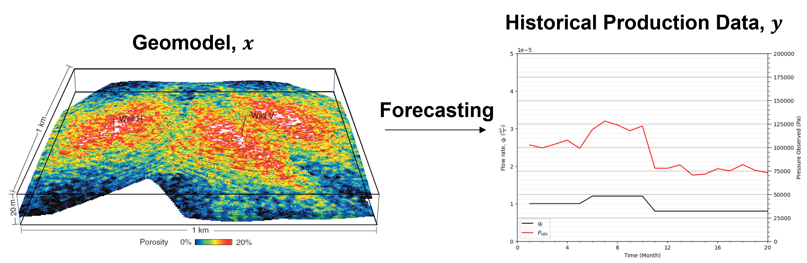
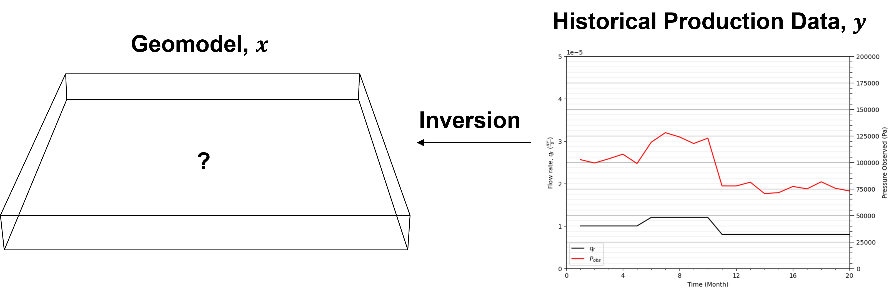
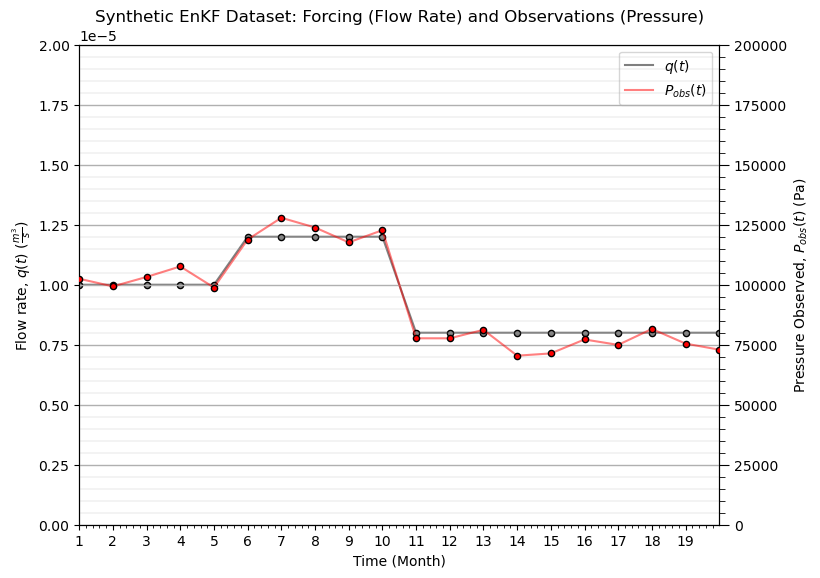
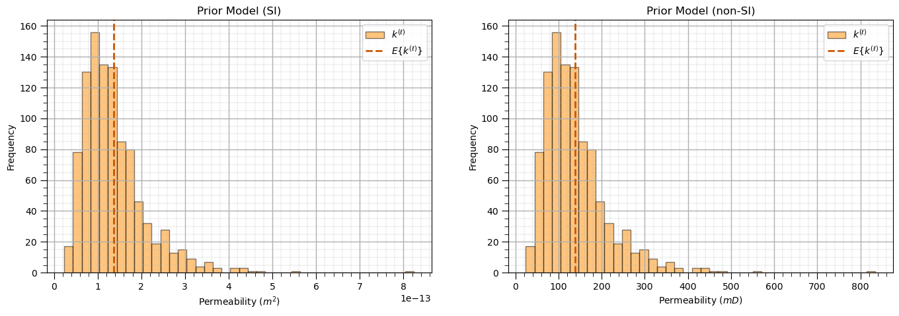
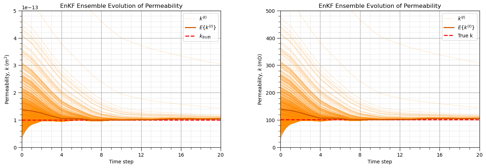
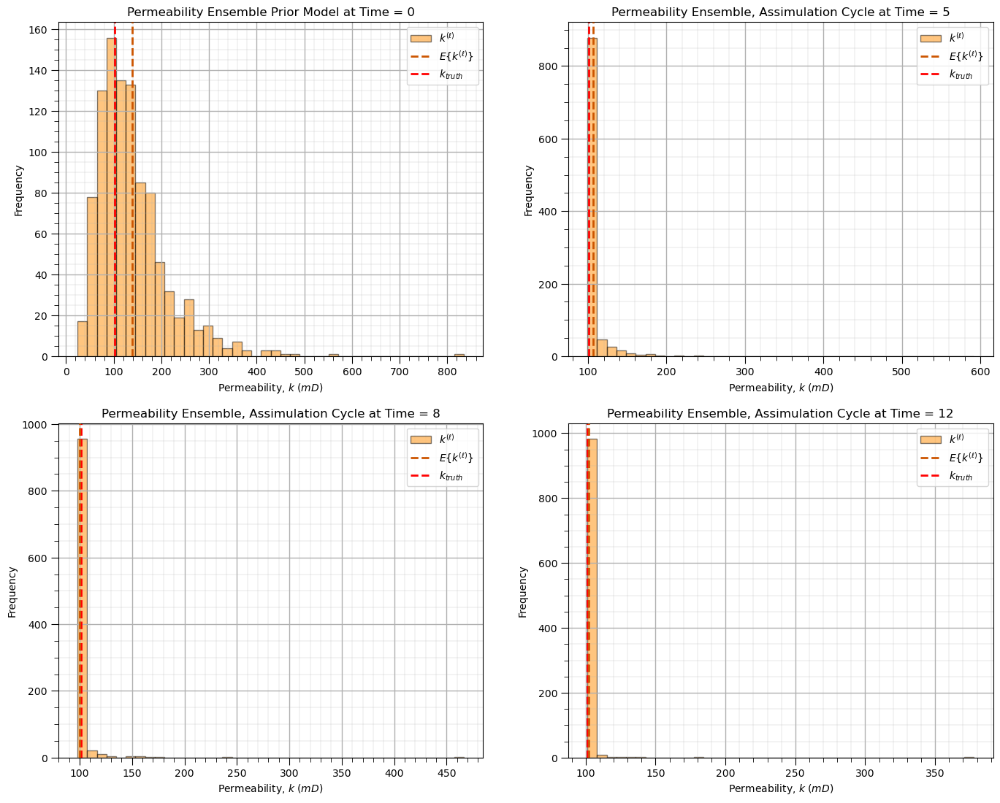

History Matching#
Michael J. Pyrcz, Professor, The University of Texas at Austin
Twitter | GitHub | Website | GoogleScholar | Book | YouTube | Applied Geostats in Python e-book | LinkedIn
Chapter of e-book “Applied Geostatistics in Python: a Hands-on Guide with GeostatsPy”.
Cite this e-Book as:
Pyrcz, M.J., 2024, Applied Geostatistics in Python: a Hands-on Guide with GeostatsPy [e-book]. Zenodo. doi:10.5281/zenodo.15169133 
The workflows in this book and more are available here:
Cite the GeostatsPyDemos GitHub Repository as:
Pyrcz, M.J., 2024, GeostatsPyDemos: GeostatsPy Python Package for Spatial Data Analytics and Geostatistics Demonstration Workflows Repository (0.0.1) [Software]. Zenodo. doi:10.5281/zenodo.12667036. GitHub Repository: GeostatsGuy/GeostatsPyDemos 
By Michael J. Pyrcz
© Copyright 2026.
Forecasting#
Forecasting is the application of a forward model, \(g(x)\), that maps a spatial Earth model, \(x\), into measurable production or state responses, \(y\), by solving the governing conservation equations (e.g., mass, momentum, and associated constitutive relations) in porous media.
The forward model can be highly nonlinear and complex. In production forecasting, for example, this may include,
multiphase flow governed by relative permeability functions, \(k_{rp}(S)\)
compressibility effects in rock and fluids, \(\phi(p)\), \(\rho(p)\)
Despite this complexity, the forward model is typically treated as deterministic,
no stochasticity in the physics given a fixed input model and boundary conditions uncertainty is introduced only through treating the inputs as random variables, e.g., varying the spatial Earth model, \(x\), model parameters, and boundary conditions
For a given Earth model, \(x\), the forward model produces a unique deterministic response, \(y\), assuming fixed physics, numerical discretization, and boundary and initial conditions.

Inversion and History Matching#
Inversion is the general process of estimating unknown model parameters from observed data by working backward from system responses to the underlying spatial or physical model.
In subsurface systems, inversion is fundamentally challenging because the problem is typically,
underdetermined (many plausible models fit the data)
nonlinear
spatially high-dimensional
uncertain
affected by sparse and indirect observations.
History matching is the specific inversion problem of adjusting subsurface models so that simulated dynamic responses reproduce historical production or monitoring data.

The central challenge of history matching is balancing,
agreement with observed dynamic data
preservation of geological realism
consistency with prior knowledge
uncertainty quantification
Because many distinct subsurface models can reproduce the same historical data, history matching is inherently nonunique and should generally produce an ensemble of plausible solutions rather than a single “best” model.
General approaches to solving history matching problems include,
iteratively updating model parameters to reduce mismatch with observations
propagating uncertainty through ensembles of realizations
reducing model dimensionality
incorporating geological constraints and prior information
balancing data fit against overfitting and loss of model forecast accuracy
Effective history matching seeks models that both honor observed system behavior and remain geologically and physically plausible for forecasting and decision making.
Ensemble Kalman Filter (EnKF)#
The Ensemble Kalman Filter (EnKF) is a sequential data assimilation method that,
uses an ensemble of realizations to represent uncertainty
updates model states or parameters by combining model predictions with noisy observations through covariance-based corrections
The method was introduced by Geir Evensen (1994) as a computationally efficient Monte Carlo implementation of the Kalman filter for large nonlinear systems.
EnKF and related data assimilation methods are widely applied in subsurface modeling to integrate model responses with model parameters, a process also known as inverse modeling. Examples include,
production history matching – petroleum reservoir modeling in petroleum geology and petroleum engineering
model calibration – groundwater flow and catchment modeling in hydrology
inverse analysis (back-analysis) – structural stability and failure analysis in rock mechanics
Let’s first introduce the workflow with the detailed workflow and math. Then I will walk through a very, very simple toy problem for petroleum history matching with codes so we can play with this method.
General Ensemble Kalman Filter (EnKF) Workflow#
Let’s start by stating that the Ensemble Kalman Filter (EnKF) is a sequential data assimilation method that combines,
uncertain model predictions
noisy observations
to improve estimates of unknown system states or parameters.
The EnKF represents uncertainty using an ensemble of realizations of the unknown model parameters and updates this ensemble sequentially in time as new observations become available.
Here are the general EnKF steps,
Define the unknown model parameter(s), also known as the state variables
Generate an initial ensemble, consisting of realizations of the unknown model parameters
Forecast the system response by applying the forward (physics) model to each ensemble member
Collect observations and compute the misfit between the observations and the forecasted system response
Compute ensemble statistics (means and covariances)
Compute the Kalman gain
Update the ensemble using the observations
Repeat sequentially through time, returning to Step 3 for the next time step
We see the general EnKF loop,
Next, we will walk through each step and define all relevant terms in detail.
Step 1. Define the Unknown State Variables or Parameters#
EnKF estimates a vector of unknown model parameters,
where \(\mathbf{x}\) is the state vector (or model parameter vector).
Spatial representation of the state
In many subsurface applications, the state variables are defined over a spatial model grid in 1D, 2D, or 3D. The spatial location of each grid cell is represented by a coordinate vector,
where \(\alpha\) indexes location within the domain of interest.
The spatially distributed state can then be written as,
where AOI is the area (or volume) of interest, and \(\mathbf{x}(\mathbf{u}_\alpha)\) is the state value at location \(\mathbf{u}_\alpha\)
while spatial location is implied, for concise notation I omit this location vector below.
Prior uncertainty and ensemble interpretation
The initial ensemble represents our prior uncertainty about the system state before any data assimilation,
each ensemble member is a realization of the full state,
State space definition
The state space is the mathematical space containing all possible values of the system state vector. If the state vector is,
then the state space is,
Examples of state variables
Typical model state variables in subsurface and geoscience applications include,
permeability
pressure
porosity
temperature
velocity
saturation
Step 2. Generate an Initial Ensemble#
Uncertainty is represented using an ensemble of realizations for the state variable(s), \(\mathbf{x}\),
where \(N_e\) is the number of ensemble members, and \(\mathbf{x}^{(\ell)}\) is the \(\ell\)-th ensemble member, with \(\ell = 1,\ldots,N_e\)
The ensemble is sampled from a prior distribution,
where \(f_{\text{prior}}(\mathbf{x})\) is the prior probability density function
In this formulation, the state \(\mathbf{x}\) represents a static unknown parameter and therefore does not carry a time index,
Time dependence will enter later through the observations and their model-predicted counterparts,
Step 3. Forecast the System Response#
Each ensemble member is propagated through a forward model,
where \(g(\cdot)\) is the forward (observation) model, \(\mathbf{x}^{(\ell)}\) is the \(\ell\)-th ensemble realization of the state, and \(\hat{\mathbf{y}}^{(\ell)}\) is the model-predicted observation for ensemble member \(\ell\)
The collection,
forms the ensemble of predicted observations, generated by mapping the ensemble of model parameters \(\mathbf{x}\) into observation space through the forward model \(g(\cdot)\).
Step 4. Collect Observations#
Measurements are collected from the real system at discrete times \(t\),
where \(\mathbf{y}^{obs}_t\) is the observation vector at times \(t\), \(t = 1,2,\dots,N_t\) and observations at these times are noisy, containing measurement uncertainty,
where \(\mathbf{x}_{true}\) is the true (unavailable) system state, and \(\boldsymbol{\epsilon}\) is the observation error at time step, \(t\)
Observation error is often assumed Gaussian distributed,
where \(\mathbf{R}\) is the observation error covariance matrix
Step 5. Compute Ensemble Statistics#
EnKF computes required statistics directly from the ensemble realizations.
Ensemble mean (state space)#
The ensemble mean of the state (unknown parameter) is,
where \(\mathbf{x}^{(\ell)}\) is the state (or parameter) of ensemble member \(\ell\), \(N_e\) = number of ensemble members, and \(\bar{\mathbf{x}}\) = ensemble mean state
Ensemble mean (observation space)#
The ensemble mean of the predicted observations is,
where \(\hat{\mathbf{y}}_t^{(\ell)} = g(\mathbf{x}^{(\ell)})\) is the model-predicted observation for ensemble member \(\ell\) at time \(t\), and \(\bar{\hat{\mathbf{y}}}_t\) is the ensemble mean of predicted observations at time \(t\)
Cross-covariance (state–observation)#
The cross-covariance between the state ensemble and predicted observation ensemble at time \(t\) is,
where \(\mathbf{C}_{x\hat{y},t}\) is the cross-covariance between state and predicted observations at time \(t\), \(\mathbf{x}^{(\ell)}\) is the ensemble state, \(\hat{\mathbf{y}}_t^{(\ell)}\) is the model-predicted observation at time \(t\), and \((\cdot)^T\) is the transpose operator
Interpretation#
The matrix \(\mathbf{C}_{x\hat{y},t}\) measures how variations in the model parameters (\(\mathbf{x}\)) are correlated with variations in the predicted observations (\(\hat{\mathbf{y}}_t\)).
This relationship is computed at each observation time \(t\)
It determines how strongly observational information at time \(t\) updates the state in the Kalman gain step
Importantly, the state ensemble \(\mathbf{x}^{(\ell)}\) does not carry a time index, since it represents a static unknown parameter. Only the forward-mapped predictions \(\hat{\mathbf{y}}_t^{(\ell)}\) evolve with time.
Step 6. Compute the Kalman Gain#
The Kalman gain determines how strongly observations influence the update at time \(t\),
where \(\mathbf{K}_t\) is the Kalman gain matrix at time \(t\), \(\mathbf{C}_{x\hat{y},t}\) is the cross-covariance between the state ensemble and predicted observations at time \(t\), \(\mathbf{C}_{\hat{y}\hat{y},t}\) is the covariance of the predicted observations at time \(t\), and \(\mathbf{R}_t\) is the observation error covariance at time \(t\).
Step 7. Update the Ensemble#
Each ensemble member is updated using the innovation (the difference between observations and predictions) at time \(t\):
where \(\mathbf{x}_{old}^{(\ell)}\) is the forecasted ensemble member before assimilation at time \(t\), \(\mathbf{x}_{new}^{(\ell)}\) is the updated (analysis) ensemble member at time \(t\), \(\mathbf{y}_t^{obs,(\ell)}\) is the perturbed observation at time \(t\), and \(\hat{\mathbf{y}}_t^{(\ell)}\) is the model-predicted observation at time \(t\).
Step 8. Repeat Sequentially Through Time#
The EnKF assimilates observations sequentially (forward) through time,
where \(t\) are time steps and \(N_t\) is the total number of time steps. At each time step, \(t\), we apply these steps once.
Ensemble Kalman Filter (EnKF) Workflow
EnKF operates as a sequential data assimilation cycle that integrates model predictions with observed data to update uncertain model parameters.
The general workflow is,
I. Forecast the system
Propagate each ensemble member through the forward model to generate predicted observations.
II. Compare predictions with observations
Compute the innovation (misfit) between observed data and ensemble-predicted observations.
III. Compute ensemble statistics
Estimate means and covariance relationships from the ensemble in state and observation space.
IV. Compute the Kalman gain
Quantify how strongly observations should influence updates using covariance structure and observation uncertainty.
V. Update the ensemble
Correct each ensemble member using the Kalman gain and the observation misfit.
This process is repeated sequentially in time as new observations become available, continually refining the estimate of the unknown model parameters.
Note, this workflow assumes that errors are not large and are Gaussian distributed.
very large updates or errors that invalidate the Gaussian assumption may break the math and degrade model performance
For these cases consider the application of Iterative Ensemble Kalman Filter (IEnKF) or Ensemble Randomized Maximum Likelihood (EnRML) methods
As more observations are assimilated,
uncertainty decreases
predictions improve
the ensemble converges toward the true system
General EnKF Workflow Summary#
The salient aspects of Ensemble Kalman Filter (EnKF) includes,
represents uncertainty with ensembles
propagates uncertainty through a forward model
compares predictions with observations
updates realizations using covariance relationships
sequentially improves estimates as new data arrive
Physics Model#
For our demonstration we have a simple, single phase hydrocarbon production problem. For this problem we have a physics-based deterministic model for forward modeling based on conservation of mass and momentum.
The mathematical foundation for multiphase subsurface flow rests on a set of coupled, nonlinear partial differential equations (PDEs).
Continuity Equation (Conservation of Mass)#
Darcy’s Law (Conservation of Momentum)#
where,
\(p_p\) : pressure of phase \(p\)
\(S_p\) : saturation of phase \(p\) (e.g., oil, gas, water)
\(\phi\) : porosity of the rock
\(\mathbf{v}_p\) : Darcy velocity
\(k\) : absolute permeability
\(k_{rp}\) : relative permeability
\(\mu_p\) : fluid viscosity
\(\rho_p\) : fluid density
\(q_p\) : source/sink term representing injection or production flow rates
\(g\) : gravitational acceleration
\(Z\) : elevation/depth coordinate
Ensemble Kalman Filtering (EnKF) for Estimating Permeability from Pressure Observations#
In this demonstration, we use the Ensemble Kalman Filter (EnKF) to estimate a single unknown permeability value from noisy pressure observations collected through time.
The workflow includes,
Define the unknown model parameter
Generate an ensemble of permeability realizations
Forecast pressure responses for each ensemble member
Generate noisy observations
Compute ensemble statistics
Compute the Kalman gain
Update the permeability ensemble
Repeat sequentially through time
1. Define the unknown model parameter#
We estimate a single unknown permeability value:
2. Generate an ensemble of permeability realizations#
Create an initial ensemble representing uncertainty in permeability:
3. Forecast pressure responses for each ensemble member#
Apply Darcy’s law to map permeability to pressure,
4. Generate noisy observations#
Pressure observations are collected over time with measurement noise,
5. Compute ensemble statistics#
Compute statistics from the ensemble of parameters and predicted pressures,
where \(\bar{k}\) is the ensemble mean permeability and \(\bar{\hat{P}}_t\) is the ensemble mean predicted pressure at time \(t\).
The cross-covariance is then computed as,
where \(\mathbf{C}_{k\hat{P},t}\) is the covariance between the permeability ensemble and the predicted pressure ensemble at time \(t\), quantifying how variations in permeability are linearly related to variations in predicted pressure.
This covariance is the key statistical link between the model parameters and the observations, and it directly controls the Kalman gain in the next step.
6. Compute the Kalman gain#
Compute the Kalman gain as,
where \(K_t\) is the Kalman gain at time \(t\), \(\mathbf{C}_{k\hat{P},t}\) is the covariance between permeability and predicted pressure at time \(t\), \(\sigma^2_{\hat{P}_t}\) is the variance of the predicted pressure ensemble at time \(t\), and \(R_t\) is the observation error variance at time \(t\).
\(\mathbf{C}_{k\hat{P},t}\) quantifies how variations in permeability explain variations in predicted pressure
\(\sigma^2_{\hat{P}_t}\) represents the spread (uncertainty) of the predicted pressure ensemble
\(R_t\) represents measurement noise in the observed pressure data
This ratio determines how strongly the observation at time \(t\) will adjust the permeability ensemble.
7. Update the permeability ensemble#
Each ensemble member is updated using the observation misfit,
8. Repeat sequentially through time#
Return to Step 3 as new pressure observations become available, continuously refining the permeability estimate.
Darcy’s Law (1-cell form used in this EnKF example)#
In this simplified 1-cell system, we relate flow, pressure, and permeability using Darcy’s law,
Rearranged to express pressure (as used in the EnKF forward model),
For the single-cell demonstration, constants are often lumped into a single coefficient,
so the forward model becomes:
where,
\(q_t\) = flow rate at time \(t\)
\(P_t\) = pressure response at time \(t\)
\(\Delta P_t\) = pressure drop across the cell
\(k\) = permeability (unknown parameter)
\(A\) = cross-sectional area
\(L\) = length of the cell
\(\hat{P}_t^{(\ell)}\) = predicted pressure from ensemble member \(\ell\)
This reduced form of Darcy’s law assumes:
Single-phase flow (no multiphase effects such as gas–oil or water–oil coupling)
Steady-state or quasi-steady-state flow (no storage or transient accumulation within the cell model)
Linear flow regime (Darcy flow; no turbulence or non-Darcy effects)
Homogeneous properties within the cell (each ensemble member assigns a single effective permeability value)
Constant geometry (area \(A\) and length \(L\) do not vary with time or ensemble)
Known forcing term (\(q_t\) is assumed measured or prescribed)
These assumptions reduce the physics to a simple monotonic mapping,
which has several important consequences,
The system is strongly nonlinear in the inverse sense (pressure depends on \(1/k\))
A single scalar parameter (\(k\)) is sufficient to explain all observations
All uncertainty enters through permeability only (no model structural uncertainty)
Each observation time provides independent information about the same static parameter
The EnKF update progressively reduces uncertainty in \(k\) as more pressure data are assimilated
This simplified Darcy formulation turns the subsurface flow problem into a clean inverse problem:
infer a single static permeability value from repeated noisy pressure observations through a nonlinear forward mapping
Load the Required Libraries#
The following code loads the required libraries.
import numpy as np # ndarrays for gridded data
import matplotlib.pyplot as plt # plotting
from matplotlib.ticker import (MultipleLocator, AutoMinorLocator) # control of axes ticks
import matplotlib.ticker as mticker
seed= 42 # random number seed
If you get a package import error, you may have to first install some of these packages. This can usually be accomplished by opening up a command window on Windows and then typing ‘python -m pip install [package-name]’. More assistance is available with the respective package docs.
Define Functions#
These are the fundamental functions required to calculate a multiple point simulation (MPS) realization, including,
build_synthetic_pressure_dataset - build a simple synthetic pressure dataset given input flow rates (\(\frac{m^3}{s}\)), true permeability (\(m^2\)), and permeability error (\(m^4\)), fluid dynamic viscosity (\(\mu\)) (\(Pa \cdot s\)), length of flow path (\(m\)), cross sectional area (\(m^2\))
generate_initial_ensemble - scan the training image and find data event matches, return the matches and frequencies of each facies at the matches with the option to plot the matches (red dots) over the training image
ensemble_mean - vectorized code for scanning the training image for data event matches, without visualization as a speed up for simulating all previous nodes before the current visualized node
Along with convenience functions,
ensemble_variance - add data to simulation model, and include any number of truth values to mimic a partially completed simulation if computational time is too long for a complete simulated realization
ensemble_covariance, covariance_PP, covariance_qP - plot the simulation model with the new simulated realization added
compute_kalman_gain - plot the conditional PDF for facies given the data event and training image as a pie plot
def build_synthetic_pressure_dataset(T, k_true, q_t, R, # build synthetic P(t) model from q(t) and true permeability
mu=1e-3, L=1.0,A=1.0,random_seed=None,return_true=False):
if random_seed is not None:
np.random.seed(random_seed) # set random seed for workflow repeatability
q_t = np.asarray(q_t)
P_true = (q_t * mu * L) / (k_true * A) # Darcy law (SI consistent)
noise = np.random.normal(0, np.sqrt(R), T) # additive Gaussian noise (EnKF-consistent)
P_obs = P_true + noise
P_obs = np.clip(P_obs, 1.0, None) # remove non-physical values
data = {"t": np.arange(T),"q_t": q_t,"P_obs": P_obs}
if return_true:
data["P_true"] = P_true # P_true to output for model checking, use P_obs
return data
def generate_initial_ensemble(N_e, mu_logk, sigma_logk, # Monte Carlo simulate initial k ensemble from lognormal distribution
random_seed=None):
if random_seed is not None: # set random seed for workflow repeatability
np.random.seed(random_seed)
logk = np.random.normal(mu_logk, sigma_logk, N_e) # Monte Carlo simulation n_e times
k = np.exp(logk)
return k
def ensemble_mean(x): # calculate ensemble mean
return np.mean(x)
def ensemble_variance(x): # calculate ensemble variance
Ne = len(x)
return np.sum((x - np.mean(x))**2) / (Ne - 1)
def ensemble_covariance(x, y): # calculate covariance between two ensembles
Ne = len(x)
return np.sum((x - np.mean(x)) * (y - np.mean(y))) / (Ne - 1)
def covariance_PP(P_hat): # calculate covariance within an ensemble over locations
return ensemble_covariance(P_hat, P_hat)
def covariance_kP(k, P_hat): # calculate covariance between two ensembles
return ensemble_covariance(k, P_hat)
def compute_kalman_gain(C_xp, C_pp, R): # calculate Kalman gain (since 1 location all are scalers)
return C_kP / (C_PP + R) # for more than 1 location must switch to matrix operations
def add_grid(): # add grid lines to plot
plt.gca().grid(True, which='major',linewidth = 1.0); plt.gca().grid(True, which='minor',linewidth = 0.2) # add y grids
plt.gca().tick_params(which='major',length=7); plt.gca().tick_params(which='minor', length=4)
plt.gca().xaxis.set_minor_locator(AutoMinorLocator()); plt.gca().yaxis.set_minor_locator(AutoMinorLocator()) # turn on minor ticks
def add_grid2(sub_plot): # add grid lines to plot
sub_plot.grid(True, which='major',linewidth = 1.0); sub_plot.grid(True, which='minor',linewidth = 0.2) # add y grids
sub_plot.tick_params(which='major',length=7); sub_plot.tick_params(which='minor', length=4)
sub_plot.xaxis.set_minor_locator(AutoMinorLocator()); sub_plot.yaxis.set_minor_locator(AutoMinorLocator()) # turn on minor ticks
Synthetic EnKF Problem#
The following code constructs a simple synthetic production dataset using a prescribed flow rate and a hidden “true” porosity/permeability field (used to generate observations but unknown to the EnKF workflow).
To ensure consistency of units, all quantities are expressed in the International System of Units (SI). The table below summarizes variables and typical values used in this demonstration.
Quantity |
Symbol |
SI Unit |
Typical value (demo) |
Details |
|---|---|---|---|---|
Permeability |
k |
\(m^{2}\) |
\(10^{-14}\) to \(10^{-12}\) |
ensemble variable updated over time, \(k^{\ell}(t)\) |
Flow rate |
q |
\(\frac{m^3}{s}\) |
\(10^{-6}\) to \(10^{-3}\) |
variable over time, \(q(t)\) |
Pressure |
P |
\(Pa\) |
\(10^{5}\) to \(10^{7}\) |
variable over time, \(P(t)\) |
Viscosity |
μ |
\(Pa \cdot s\) |
\(10^{-3}\) (water/oil-like) |
constant |
Length |
L |
\(m\) |
\(1.0\) |
constant |
Area |
A |
\(m^2\) |
\(1.0\) |
constant |
Many practitioners are more familiar with Darcy units for permeability, so permeability is converted from SI units \(m^2\) to industry standard \(mD\) after each update step for visualization.
For a physically plausible synthetic dataset, the flow rate is prescribed as a smoothly varying function of time:,
Then pressure is calculated from Darcy’s law,
where all terms are defined in the table above.
We make the following assumptions,
porosity is treated as constant (no storage heterogeneity), and storage effects are neglected under steady-state conditions
flow is controlled by transmissibility rather than compressibility or accumulation
\(k_{true}\) is the true permeability of the single-cell system, used to generate synthetic observations \(P_{obs}(t)\), but is unknown to the EnKF and estimated through the assimilation cycle
T = 20 # number of produciton time and EnKF assimulation steps
k_true = 1.0e-13 # true permeability
q = np.ones(T) * 1e-5 # observation error variance
sigma_obs = 5000.0 # pressure observed error in st.dev.
R = sigma_obs**2
q = np.ones(T) * 1e-5 # known forcing (flow rate)
q[5:10] = 1.2e-5
q[10:] = 8e-6
data = build_synthetic_pressure_dataset(T=T,k_true=k_true,q_t=q,R=R,random_seed=42,return_true=True) # generate synthetic dataset
t = data["t"] + 1 # extract time and pressure
P_obs = data["P_obs"]
P_true = data["P_true"]
fig, ax1 = plt.subplots() # plot historical production data over time
line1 = ax1.plot(t, q,color = 'black',alpha=0.5,label=r"$q(t)$",zorder=1)
ax1.set_xlabel("Time (Month)"); ax1.set_ylabel(r"Flow rate, $q(t)$ ($\frac{m^3}{s}$)"); ax1.set_ylim([0.0e-5,2.0e-5])
ax2 = ax1.twinx()
line2 = ax2.plot(t, P_obs, color="red",alpha=0.5,label=r"$P_{obs}(t)$")
ax2.set_ylabel(r"Pressure Observed, $P_{obs}(t)$ (Pa)"); ax2.set_ylim([0,200000])
lines = line1 + line2
labels = [l.get_label() for l in lines]
ax1.legend(lines, labels, loc="upper right")
plt.xlim([1,np.max(t)]); plt.xticks(np.arange(1, len(t), 1))
ax1.scatter(t,q,color='grey',edgecolor='black',s=20,zorder=100)
ax2.scatter(t,P_obs,color='red',edgecolor='black',s=20,zorder=100)
plt.title("Synthetic EnKF Dataset: Forcing (Flow Rate) and Observations (Pressure)"); add_grid()
plt.subplots_adjust(left=0.0, bottom=0.0, right=1.0, top=1.0, wspace=0.3, hspace=0.3); plt.show()

Assign Prior Model#
Generate a prior model as an ensemble of permeability realizations.
We assume a lognormal prior distribution for permeability, defined such that,
\(lnk \sim N(μ,σ^2)\)
\(\mu = ln(1.2 \times 10^{−13})\)
\(\sigma = 0.5\)
Each ensemble member represents a plausible realization of the subsurface, including,
spatially variable permeability fields
associated porosity realizations (if modeled jointly or as correlated uncertainty)
prior geological uncertainty prior to data assimilation
This ensemble defines the prior uncertainty model before incorporation of historical production data.
it is important to emphasize that this prior represents uncertainty in the Earth model, not randomness in the physics.
Finally, in the Ensemble Kalman Filter (EnKF), the full ensemble is updated simultaneously at each assimilation step, with each member being adjusted based on the data mismatch and ensemble-derived covariances.
Ne = 1000 # set number of samples in ensemble
mu = np.log(1.2e-13); sigma = 0.5
# k_prior = np.random.lognormal(mean=np.log(1.2e-13),sigma=0.5,size=Ne) # Monte Carlo simulation from prior distribution
k_prior = generate_initial_ensemble(N_e=Ne, mu_logk=mu, # Monte Carlo simulate initial k ensemble from lognormal distribution
sigma_logk=sigma,random_seed=seed)
kmD_prior = k_prior/9.86923e-16
plt.subplot(121) # plot SI permeability ensemble histogram
plt.hist(k_prior,color='darkorange',edgecolor='black',alpha=0.5,bins=40,label=r'$k^{(\ell)}$')
plt.axvline(np.mean(k_prior),color="#CC5500",linestyle='--',linewidth=2,label=r'$E\{k^{(\ell)}\}$')
add_grid(); plt.xlabel(r'Permeability ($m^2$)'); plt.ylabel('Frequency'); plt.title('Prior Model (SI)'); plt.legend(loc="upper right")
plt.subplot(122)
plt.hist(kmD_prior,color='darkorange',edgecolor='black',alpha=0.5,bins=40,label=r'$k^{(\ell)}$') # plot mD permeability ensemble histogram
plt.axvline(np.mean(kmD_prior),color="#CC5500",linestyle='--',linewidth=2,label=r'$E\{k^{(\ell)}\}$')
add_grid(); plt.xlabel(r'Permeability ($mD$)'); plt.ylabel('Frequency'); plt.title('Prior Model (non-SI)'); plt.legend(loc="upper right")
plt.subplots_adjust(left=0.0, bottom=0.0, right=2.0, top=0.8, wspace=0.2, hspace=0.2); plt.show()

EnKF Assimilation Cycles Over Time Steps#
We have all the required components:
physically plausible pressure observations, \(P_{obs}(t)\), generated over time from a hidden true permeability field and a prescribed flow-rate schedule
A prior ensemble of permeability realizations initialized at time \(t=0\), denoted \(k^{(ℓ)}(0)\)
A set of functions defining each step of the EnKF assimilation cycle
Below is the implementation of the assimilation loop over all time steps.
k_history = [] # initialize list to store all permeability ensemble values over time
k_history = [k_prior.copy()] # assign time step 0 as the prior permeability ensemble
mu = 1e-3; L = 1.0; A = 1.0 # assign model constants as discussed above, viscosity, path length and area
alpha = 0.3 # analogous to step size to slow learning
rho = 1.00 # inflation / dampenning factor, slow learning for improved visualization of process
np.random.seed(seed=seed) # set random number seed for workflow repeatability
k = k_prior # current copy of permeability essemble as the prior ensemble
for t_step in range(len(t)): # ENKF LOOP over assimulation cycles for each time step
k_f = k.copy() # make a working copy of the permeability essemble
P_hat = (q[t_step] * mu * L) / (k_f * A) # forward forecast at current time step
P_obs_ens = np.full(Ne, P_obs[t_step]) # replicate single observation Ne times for ensemble update (consistent vector length)
k_mean = np.mean(k_f); P_mean = np.mean(P_hat) # calculate ensemble statistics, mean, variance, then covariance and cross-covariance
C_kP = np.sum((k_f - k_mean) * (P_hat - P_mean)) / (Ne - 1)
C_PP = np.sum((P_hat - P_mean)**2) / (Ne - 1)
K = C_kP / (C_PP + R) # calculate Kalman gain, since 1 location we use simplified scalar form
k_a = k_f + alpha * K * (P_obs_ens - P_hat) # calculate updated permeability ensemble
k_mean = np.mean(k_a) # apply dampenning factor to slow assimulation for improved visualization of process
k_a = k_mean + rho * (k_a - k_mean)
k_a = np.clip(k_a, 1e-16, None) # optional physical constraint
k = k_a # update permeability ensemble list and add to 2D array for visualization over time steps
k_history.append(k.copy())
Visualize EnKF Assimilation Cycles Over Time Steps#
We now visualize the evolution of the permeability ensemble across all assimilation cycles over time.
The visualization includes,
permeability ensemble evolution over time
true (hidden) permeability field (reference model)
ensemble mean permeability at each time step
This allows direct assessment of,
ensemble convergence toward the true model
reduction of uncertainty through assimilation cycles
preservation of ensemble spread and variability over time
k_history_array = np.array(k_history) # convert 2D permeabilty ensemble to 2D ndarray
kmD_history_array = k_history_array/9.86923e-16 # convert to mD for improved visualizations
kmD_true = k_true/9.86923e-16
T, Ne = k_history_array.shape; time = np.arange(T) # new time index with prior at t = 0
plt.subplot(121) # plot permeability ensembles over assimulation cycles
for i in range(Ne):
if i == 0:
plt.plot(time, k_history_array[:, i], color="darkorange", alpha=0.2, linewidth=1,label=r'$k^{(\ell)}$')
else:
plt.plot(time, k_history_array[:, i], color="darkorange", alpha=0.2, linewidth=1)
k_mean = np.mean(k_history_array, axis=1)
plt.plot(time,k_mean,color="#CC5500",linewidth=2,label=r'$E\{k^{(\ell)}\}$',zorder=10)
plt.axhline(k_true, color="red", linestyle="--",linewidth=2,label=r'$k_{truth}$')
plt.xlabel("Time step"); plt.ylabel(r"Permeability, $k$ ($m^2$)"); plt.title("EnKF Ensemble Evolution of Permeability")
plt.xlim([0,20]); plt.ylim([0,0.5e-12]); plt.legend(); add_grid()
plt.xticks(np.arange(0, len(time), 4))
plt.subplot(122)
for i in range(Ne):
if i == 0:
plt.plot(time, kmD_history_array[:, i], color="darkorange", alpha=0.2, linewidth=1,label=r'$k^{(\ell)}$')
else:
plt.plot(time, kmD_history_array[:, i], color="darkorange", alpha=0.2, linewidth=1)
kmD_mean = np.mean(kmD_history_array, axis=1)
plt.plot(time, kmD_mean,color="#CC5500",linewidth=2,label=r'$E\{k^{(\ell)}\}$',zorder=10)
plt.axhline(kmD_true,color="red",linestyle="--",linewidth=2,label="True k")
plt.xlabel("Time step"); plt.ylabel(r"Permeability, $k$ (mD)"); plt.title("EnKF Ensemble Evolution of Permeability")
plt.xlim([0,20]); plt.ylim([0,500.0]); plt.legend(); add_grid()
plt.xticks(np.arange(0, len(time), 4))
plt.subplots_adjust(left=0.0, bottom=0.0, right=2.0, top=0.8, wspace=0.3, hspace=0.3); plt.show()

These results look good. Key observations include,
prior permeability ensemble at t=0 exhibits high variance, initialized from a lognormal distribution with a slightly biased (high) mean, representing prior geological uncertainty.
assimilated permeability ensemble over successive assimilation cycles for \(t=1,\ldots,T\) shows a progressive reduction in uncertainty (decreasing variance) and a correction of the ensemble mean toward the hidden true permeability.
posterior permeability ensemble stabilizes over time, with the ensemble mean converging toward the true permeability. The uncertainty envelope narrows but does not collapse, preserving realistic posterior variability.
Visualize Permeability Ensemble Distributions Over Assimilation Cycles#
We now select four representative assimilation time steps and visualize histograms of the permeability ensemble at each selected time.
This allows comparison of,
prior distribution shape at early time steps
progressive Bayesian updating through assimilation cycles
evolution of ensemble spread and skewness over time
convergence behavior toward the true permeability distribution
viz_T = [0,5,8,12] # assign assimulation cycles, time steps to plots
index = 1 # plot the permeability ensemble histograms at each time step
for viz_t in viz_T:
plt.subplot(2,2,index)
plt.hist(kmD_history_array[viz_t,:],color='darkorange',edgecolor='black',bins=40,alpha=0.5,label=r'$k^{(\ell)}$') # plot mD permeability ensemble histogram
plt.axvline(np.mean(kmD_history_array[viz_t,:]),color="#CC5500",linestyle='--',linewidth=2,label=r'$E\{k^{(\ell)}\}$',zorder=10)
plt.axvline(kmD_true, color='red', linestyle='--', linewidth=2,label=r'$k_{truth}$'); plt.legend(loc='upper right')
add_grid(); plt.xlabel(r'Permeability, $k$ ($mD$)'); plt.ylabel('Frequency')
if viz_t == 0:
plt.title('Permeability Ensemble Prior Model at Time = 0')
else:
plt.title('Permeability Ensemble, Assimulation Cycle at Time = ' + str(viz_t))
index = index + 1
plt.subplots_adjust(left=0.0, bottom=0.0, right=2.0, top=2.1, wspace=0.2, hspace=0.2); plt.show()

These histograms of the permeability ensemble over assimilation cycles at selected time steps illustrate the following,
permeability ensemble mean converges toward the hidden true permeability
uncertainty decreases progressively and then stabilizes, forming a consistent posterior distribution after sufficient assimilation cycles
About the Author#

Michael Pyrcz is a professor in the Cockrell School of Engineering, and the Jackson School of Geosciences, at The University of Texas at Austin, where he researches and teaches subsurface, spatial data analytics, geostatistics, and machine learning. Michael is also,
the principal investigator of the Energy Analytics freshmen research initiative and a core faculty in the Machine Learn Laboratory in the College of Natural Sciences, The University of Texas at Austin
an associate editor for Computers and Geosciences, and a board member for Mathematical Geosciences, the International Association for Mathematical Geosciences.
Michael has written over 90 peer-reviewed publications, a Python package for spatial data analytics, co-authored a textbook on spatial data analytics, Geostatistical Reservoir Modeling and author of two recently released e-books, Applied Geostatistics in Python: a Hands-on Guide with GeostatsPy and Applied Machine Learning in Python: a Hands-on Guide with Code.
All of Michael’s university lectures are available on his YouTube Channel with links to 100s of Python interactive dashboards and well-documented workflows in over 40 repositories on his GitHub account, to support any interested students and working professionals with evergreen content. To find out more about Michael’s work and shared educational resources visit his Website.
Want to Work Together?#
I hope this content is helpful to those that want to learn more about subsurface modeling, data analytics and machine learning. Students and working professionals are welcome to participate.
Want to invite me to visit your company for training, mentoring, project review, workflow design and / or consulting? I’d be happy to drop by and work with you!
Interested in partnering, supporting my graduate student research or my Subsurface Data Analytics and Machine Learning consortium (co-PI is Professor John Foster)? My research combines data analytics, stochastic modeling and machine learning theory with practice to develop novel methods and workflows to add value. We are solving challenging subsurface problems!
I can be reached at mpyrcz@austin.utexas.edu.
I’m always happy to discuss,
Michael
Michael Pyrcz, Ph.D., P.Eng. Professor, Cockrell School of Engineering and The Jackson School of Geosciences, The University of Texas at Austin
More Resources Available at: Twitter | GitHub | Website | GoogleScholar | Geostatistics Book | YouTube | Applied Geostats in Python e-book | Applied Machine Learning in Python e-book | LinkedIn
Comments#
This is a basic demonstration of history matching using the Ensemble Kalman Filter (EnKF).
in an effort to provide a maximally accessible illustration of the full workflow, I have intentionally used a highly simplified single-cell model. Nevertheless, I believe this provides a clear and useful introduction, with all key steps and calculations explicitly shown.
Much more can be done, I have other demonstrations for modeling workflows with GeostatsPy in the GitHub repository GeostatsPy_Demos.
I hope this is helpful,
Michael